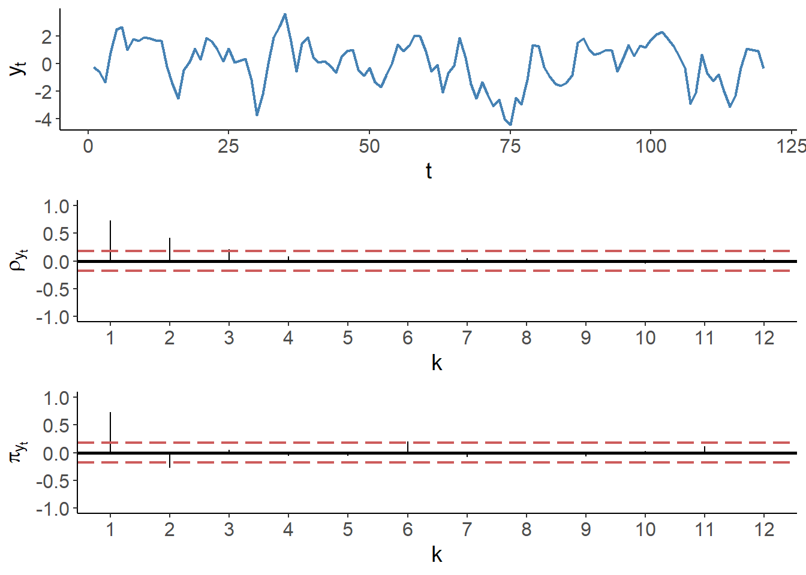

Tutorial 5
In this tutorial, we will generate regime-dependent series, we will apply a grid-search method to obtain the threshold parameter, we will obtain and compare one-step-ahead forecasts from competing models using a rolling window procedure, and we will apply bootstrap resampling method to generate multi-step-ahead forecasts from a threhsold regression. To run the code, the data.table and ggplot2 packages need to be installed and loaded.
Let’s generate a time series that follow a TAR(2) process of the following form: \[y_t = \left\{\begin{array} {ll} y_{t-1} + \varepsilon_t & \text{if}~~y_{t-1}\ge0 \\ 1.2y_{t-1}-0.3y_{t-2} + \varepsilon_t & \text{if}~~y_{t-1} < 0 \end{array}\right. \] where \(e_{t} \sim N(0,\sigma^2)\). This suggests that the time series follow the unit root process if the lagged dependent variable is non-negative, otherwise the time series is a mean-reverting AR(2) process.
n <- 360
set.seed(6)
e <- rnorm(n,0,1)
y <- rep(NA,n)
y[1] <- e[1]
if(y[1]>=0){
y[2] <- 1.0*y[1]+e[2]
}else{
y[2] <- 1.2*y[1]+e[2]
}
for(i in 3:n){
if(y[i-1]>=0){
y[i] <- 1.0*y[i-1]+e[i]
}else{
y[i] <- 1.2*y[i-1]-0.3*y[i-2]+e[i]
}
}Generate a vector of some arbitrary dates (e.g., suppose we deal with the monthly series beginning from January 1991), and store these along with \(y\) in a data.table, call it ‘dt.’
date <- seq(as.Date("1991-01-01"),by="month",along.with=y)
dt <- data.table(date,y)Plot the realized time series using ggplot function.
ggplot(dt,aes(x=date,y=y))+
geom_line(size=1)+
labs(x="Year",y="Series")+
theme_classic()
Decide on the optimal lag length based on AIC.
dt[,`:=`(y_l1=shift(y),y_l2=shift(y,2),y_l3=shift(y,3),y_l4=shift(y,4))]
dt <- dt[complete.cases(dt)]
IC_dt <- data.table(lag=c(1:4),AIC=as.numeric(NA),SIC=as.numeric(NA))
for(i in 1:nrow(IC_dt)){
fmla <- as.formula(paste("y",paste0("y_l",c(1:i),collapse="+"),sep="~"))
reg.ar <- lm(fmla,data=dt)
IC_dt$AIC[i] <- log(crossprod(reg.ar$residuals))+2*(i+1)/nrow(dt)
IC_dt$SIC[i] <- log(crossprod(reg.ar$residuals))+log(nrow(dt))*(i+1)/nrow(dt)
}
IC_dt## lag AIC SIC
## 1: 1 5.822589 5.844358
## 2: 2 5.821342 5.853996
## 3: 3 5.826916 5.870454
## 4: 4 5.832294 5.886717We now need to get an estimate of the threshold parameter (i.e., the value at which the switch between the regimes happens). For that, we perform a grid-search routine. We will consider a range of candidate thresholds that are within 10th and 90th percentile of the lagged dependent variable. For each candidate threshold, we will run an OLS and calculate the residual sums of squares. A threshold that yields the lowest residual sum of squares will be the estimate.
qy <- round(quantile(dt$y,c(.1,.9)),1)
tr <- seq(qy[1],qy[2],by=.1)
grid_dt <- data.table(tr,ssr=NA)
grid_dt[,`:=`(ssr=as.numeric(ssr))]
for(i in tr){
dt[,`:=`(d=ifelse(y_l1>=i,1,0))]
tar <- lm(y~(y_l1+y_l2):I(d)+(y_l1+y_l2):I(1-d),data=dt)
grid_dt[tr==i]$ssr <- crossprod(tar$residuals)
}
tr_hat <- grid_dt[ssr==min(ssr)]$tr
tr_hat## [1] -1Estimate the threshold autoregression and compare the parameter estimates with the true parameters of the model.
dt[,`:=`(d=ifelse(y_l1>=tr_hat,1,0))]
tar <- lm(y~(y_l1+y_l2):I(d)+(y_l1+y_l2):I(1-d),data=dt)
summary(tar)##
## Call:
## lm(formula = y ~ (y_l1 + y_l2):I(d) + (y_l1 + y_l2):I(1 - d),
## data = dt)
##
## Residuals:
## Min 1Q Median 3Q Max
## -2.97704 -0.60528 -0.02506 0.61754 2.66733
##
## Coefficients:
## Estimate Std. Error t value Pr(>|t|)
## (Intercept) -0.01380 0.07519 -0.183 0.854535
## y_l1:I(d) 0.97060 0.06283 15.449 < 2e-16 ***
## y_l2:I(d) 0.00998 0.06160 0.162 0.871403
## y_l1:I(1 - d) 1.24182 0.10229 12.140 < 2e-16 ***
## y_l2:I(1 - d) -0.34188 0.10158 -3.366 0.000848 ***
## ---
## Signif. codes: 0 '***' 0.001 '**' 0.01 '*' 0.05 '.' 0.1 ' ' 1
##
## Residual standard error: 0.9586 on 351 degrees of freedom
## Multiple R-squared: 0.916, Adjusted R-squared: 0.9151
## F-statistic: 957.5 on 4 and 351 DF, p-value: < 2.2e-16Generate a sequence of one-step-ahead forecasts from TAR(2) using the rolling window scheme, where the first rolling window ranges from period 1 to period 240. For comparison, also generate the one-step-ahead forecasts from the AR(2) and the random walk models. Calculate the RMSFE measures for the three models.
R <- 240
P <- nrow(dt)-R
dt[,`:=`(rw=as.numeric(NA),ar=as.numeric(NA),tar=as.numeric(NA))]
for(i in 1:P){
ar <- lm(y~y_l1+y_l2,data=dt[i:(R-1+i)])
tar <- lm(y~(y_l1+y_l2):I(d)+(y_l1+y_l2):I(1-d),data=dt[i:(R-1+i)])
dt$rw[R+i] <- dt$y[R-1+i]
dt$ar[R+i] <- ar$coefficients[1]+ar$coefficients[2]*dt$y[R-1+i]+ar$coefficients[3]*dt$y[R-2+i]
if(dt$y[R-1+i]>=0){
dt$tar[R+i] <- tar$coefficients[1]+tar$coefficients[2]*dt$y[R-1+i]+tar$coefficients[3]*dt$y[R-2+i]
}else{
dt$tar[R+i] <- tar$coefficients[1]+tar$coefficients[4]*dt$y[R-1+i]+tar$coefficients[5]*dt$y[R-2+i]
}
}
dt[,`:=`(rw_e=y-rw,ar_e=y-ar,tar_e=y-tar)]
rmsfe_rw <- sqrt(mean(dt$rw_e^2,na.rm=T))
rmsfe_ar <- sqrt(mean(dt$ar_e^2,na.rm=T))
rmsfe_tar <- sqrt(mean(dt$tar_e^2,na.rm=T))
rmsfe_rw## [1] 0.9258102rmsfe_ar## [1] 0.9811523rmsfe_tar## [1] 0.9996084Obtain the multi-step-ahead forecasts from period 241 onward using the so-called ‘skeleton extrapolation’ method (which yields biased forecasts) and the bootstrap resampling method (a numerical method that yields valid multi-step-ahead forecasts from nonlinear models). Plot the two forecasts along with the time series.
dt[,`:=`(tar_skeleton=y)]
tar <- lm(y~(y_l1+y_l2):I(d)+(y_l1+y_l2):I(1-d),data=dt[1:R])
for(i in 1:P){
if(dt$tar_skeleton[R-1+i]>=0){
dt$tar_skeleton[R+i] <- tar$coefficients[1]+tar$coefficients[2]*dt$tar_skeleton[R-1+i]+tar$coefficients[3]*dt$tar_skeleton[R-2+i]
}else{
dt$tar_skeleton[R+i] <- tar$coefficients[1]+tar$coefficients[4]*dt$tar_skeleton[R-1+i]+tar$coefficients[5]*dt$tar_skeleton[R-2+i]
}
}
dt[1:R]$tar_skeleton <- NA
B <- 5000 # the number of bootstrap simulations
boot_mat <- replicate(B,dt$y)
for(b in 1:B){
eps <- sample(tar$residuals,P,replace=T)
for(i in 1:P){
if(boot_mat[R-1+i,b]>=0){
boot_mat[R+i,b] <- tar$coefficients[1]+tar$coefficients[2]*boot_mat[R-1+i,b]+tar$coefficients[3]*boot_mat[R-2+i,b]+eps[i]
}else{
boot_mat[R+i,b] <- tar$coefficients[1]+tar$coefficients[4]*boot_mat[R-1+i,b]+tar$coefficients[5]*boot_mat[R-2+i,b]+eps[i]
}
}
}
dt$tar_boot <- rowMeans(boot_mat)
dt[1:R]$tar_boot <- NA
sub_lg <- melt(dt[,.(date,y,tar_skeleton,tar_boot)],id.vars="date")
ggplot(sub_lg,aes(x=date,y=value,color=variable,linetype=variable))+
geom_line(size=1,na.rm=T)+
scale_color_manual(values=c("darkgray","indianred","steelblue"))+
scale_linetype_manual(values=c(1,2,5))+
theme_classic()